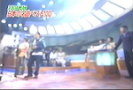
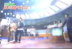
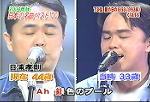
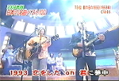
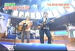
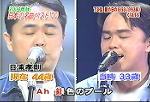
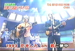
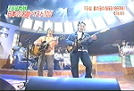

2004年
class archive ｜non-profit, silent archive
2004年12月2日から始まったワンマンツアー「after class 2004 "Can't Stop Loving..."」が無事に終了致しました。
class、スタッフ、ライブに関わった全ての皆様お疲れ様でした！
レポ、セットリストは徐々に完成させていきます･･･（遅っ！ あぁ、もう言葉が出ない･･･）
絶賛ワンマンツアー敢行中のclass。11日(土)千秋楽の京都ライブですが、京都ライブのみゲストバンドによるオープニングアクトがあります。
チケットの字が解読不能だったので、今まで発表しませんでしたが、ようやくわかりました(^^;
そのゲストバンドの名前は「偏脳侍(ヘンノウジ)」さんです。
オープニングアクトは京都だけですので必見！
知るのが遅くて、朝の5時起きで探しました(^^; 夕刊紙「日刊ゲンダイ」の11月26日付（実際は25日発行）の"あの人は今こうしている"に津久井さんが掲載されました～!!
classの絶頂期、解散後、そして今後の活動についてのインタビューが事細かに載っております。ワンマンの情報も掲載中♪
…あと私、大阪人じゃないよ？(笑)（←記事中はそうなっている）
（･･･更新が遅くなっちゃった(^^;）
京都ライブのチケット予約がスタートしております！東京公演同様にこちらのページから予約販売のみとなります。
ツアーの最終日ですので、大盛り上がり間違いなし！
関西方面の方々は是非是非起こし下さいませ～。そして京都ライブのみゲストバンドが登場します。こちらもお楽しみに～！
でもって、津久井さんが日浦さんも掲載された「日刊ゲンダイ」の連載「あの人は今こうしている」に今月中掲載される模様です。（ソース元：餃子倶楽部/年記）
まずは10月30日(土)に発売された大阪ライブのチケットの詳細を追加いたします。チケットはぴあ、ローソンチケットの他にe+（イープラス)でも購入可能になっております。
e+（イープラス）
■会員登録制（無料）する → web予約（★要アクセスコード） →チケット郵送（手数料）
(情報提供；しげ様＞ｱﾘｶﾞﾄ!(´▽｀))
大阪ライブのチケット購入された方はご存知だと思いますが、チケットに今回のツアーの正式タイトルが記載されています。
今回のワンマンツアーのタイトルは…
「class winter live "足跡" 1993～2004」ではなく
「after class 2004 "Can't Stop Loving..."」
です。なんかかっちょえーっ!!!
10月30日(土)に大阪会場のチケットが発売されます！ぴあ、ローソンともに入手詳細をお知らせします。ぴあ、ローソンともに発売日は30日。購入方法は･･･
【チケットぴあ】Pコード：186-866■店頭で直接購入（★要Pコード）
■＠ぴあメンバーズへ会員登録（無料）する。→ web予約 → チケット引取（要手数料）
【ローソンチケット・ドットコム】 Lコード：58634
■電話での予約は、近畿開催ライブ専用番号0570-063-005へ（★要Lコード）
■オンラインで購入の場合はLEncore会員またはドットコムステージパス登録必要（★要年会費）
整理番号1番取ったるどー(｀･ω･´)!!!
東京の会場となる「桜ホテル青山」についての宿泊特典についてお知らせです。
★ 問い合わせ先変更お問い合わせはメールと現在まで発表してきましたが、桜ホテル青山の電話が通じるようになっております。以降は
★ 宿泊特典の適用を受けるためには？
classをご覧になって、宿泊される方へ宿泊の予約方法を発表致します♪ 1. 「桜ホテル青山」のサイトへ
2. 「web予約」をクリック
3. [開業記念プラン]の予約申し込み(赤い文字)の予約申し込みをクリック
4. 宿泊希望日を入力
5. 次へ進む
6. 予約情報入力ページ
7. 必須情報の後に「備考欄」があるのでそこへ「餃子倶楽部特別価格」と必ず入力して下さい！
このキーワードがいちばん重要です。
こちらが入力されていない方は特別価格の適用が受けられませんので予めご了承下さい。
★適用期間は2004年12月1日～5日までです。
続々とワンマンライブの詳細をドドーンとご紹介しちゃいます♪
1.
東京会場決定！+ 特典付き！
東京の会場が決定しました！東京の「桜ホテル青山1F カフェ・メリーココ」となりました。アクセス方法などは上記のホテルのページを参照にして下さい。そしてclassライブを見て、同ホテルにご宿泊の人にはなんと！通常宿泊料金10,600円→6,300円(40％OFF！)になります。要予約っ但し、現在ホテルは改装中とのことなので、お問い合わせはメールへお願いします。
2.
大阪のチケット発売日
大阪のチケット発売日は2004年10月30日(土)に決定しました。オールスタンディング形式でチケットは4000円となります。ぴあ or ローソンチケットから購入できます。です
3.
ツアータイトル決定？！
昔と同じようにこのツアータイトルは「after class 2004｣となるようです。まだ仮決定か？！
それではまとめいってみよう！
::::: 「after class 2004｣＠東京 :::::■日時 ：2004年12月2日（木） / 3日（金)
■場所 ：桜ホテル青山1F カフェ・メリーココ（東京メトロ/東急[渋谷]徒歩5分、東京メトロ[表参道]徒歩10分)
■開場 ：18：00/19：00(開演)
■チケット：4,000円
■購入法：未定
★備考 ：現在会場は改装中ですが、ライブ当日はリニューアルオープン中です。ライブを見て宿泊すると料金が40％オフになります
::::: 「after class 2004｣＠大阪 :::::
■日時 ：2004年12月10日(金)
■場所 ：大阪・心斎橋ミューズ(御堂筋線[心斎橋] 徒歩5分)
■開場 ：18：00/19：00(開演)
■チケット：4,000円(オールスタンディング)
■購入法：チケットぴあ、ローソンチケット
★備考 ：チケット発売日は10月30日(土)
::::: 「after class 2004｣＠京都 :::::
■日時 ：2004年12月11日(土)
■場所 ：京都MOJO WEST (地下鉄烏丸線[北山]4番出口 徒歩？分)
■開場 ：18：00/19：00(開演)
■チケット：4,000円
■購入法 ：未定
★備考 ：ゲストバンドあります。
東京、大阪に続き日浦さんゆかりの地「京都」でもclassのライブが決定しましたよ！日程は大阪ライブの翌日の12月11日(土)、場所は京都MOJO WESTです。よっしゃー!!!ついでに京都観光もするぞー！
でもって、東京の2daysですが、日程変更のお知らせがあります。当初予定していた12月1日(水)、2日(木)でしたが、12月2日(木)、3日(金)へと日程が変更になっております。と有休をとる計画がある方へ。ご注意下さい。
♪♪classワンマンライブツアー日程表♪♪
- 12月02日(木) 東京・青山（詳細不明）
- 12月03日(金) 東京・青山（詳細不明）
- 12月10日(金) 大阪・心斎橋ミューズホール
- 12月11日(土) 京都・MOJO WEST ★前座あります
どんどん発表していきますよー!!!
今から約1年前にみんなで頑張ったワンマン実現署名活動の結果をいよいよお知らせすることが出来ることになりました。
classが12月に東京と大阪で
ワンマンライブを開催します!!!!!
日程を発表いたします。
東京は･･･12月1日(水）/2日(木) 東京青山
大阪は･･･12月10日(金) 大阪・心斎橋ミューズホール
東京は2days開催？！マジで？！うひょ～～もう感激でなにがなんだが分からなくて目が痛い～～( >▽ < )!!!
詳細は決定次第、発表していきます!! 待て次号！
いよいよ、いよいよ来週はアルバム「夏記」がリリースされます!!! 予約OKですか？前日は十分に睡眠をおとり下さい。そんなわけで「夏記」に収録される曲の作詞、作曲、アレンジャーが発表されていました。
1. 夏の日の・・・・(4:34) 作詞：松本一起／作曲：佐藤健／編曲：富田素弘2. いつでもふたり (5:28) 作詞：津久井克行／作曲：安部恭弘／編曲：富田素弘
3. 向日葵 (3:39) 作詞：津久井克行／作曲：斎藤誠／編曲：富田素弘
4. Angel Eyes (4:34) 作詞：日浦孝則／作曲：日浦孝則／編曲：澤近泰輔
5. あの日の時計台 (5:19) 作詞：日浦孝則／作曲：日浦孝則／編曲：澤近泰輔
6. 夏の日の1993～2003 up to date session～ (4:34) 作詞：松本一起／作曲：佐藤健／編曲：富田素弘
classスタンダートスタイルが2曲、津久井作2曲、日浦作2曲とこの10年の総まとめであり、解散～再結成までのお二人の成長の軌跡でもあるアルバム「夏記」。まもなくリリースです!!!
それと試聴ですが8月10日までYahoo！ミュージックからも試聴可能となっております♪あとオリコンにレビューが…(～21日まで）
音楽という絆で結ばれた津久井克行と日浦孝則が共にこだわりを持つもの それは郷土料理 桐生出身の津久井が名物のうどんを打ち 広島出身の日浦がそのうどんを入れたお好み焼きを仕上げる 互いが故郷の味でハーモニーを奏でるとき その先に見える風景とは･･･ 音楽という絆で結ばれた津久井克行と日浦孝則が 共にこだわりを持つもの それは郷土料理 桐生出身の津久井が名物のうどんを打ち 広島出身の日浦がそのうどんを入れたお好み焼きを仕上げる 互いが故郷の味でハーモニーを奏でるとき その先に見える風景とは･･･
「夏の日の1993」／再結成 「夏の日の1993」でミリオンヒットを 達成したデュオ・クラス 96年に解散するも昨年再び活動を再開した 若いころにはなかった気持ちの余裕ができた今 津久井と日浦は料理という共通のこだわり通して 『モノ作りへの新鮮な気持ち』を 確かめようとしていた
生まれ故郷／群馬県・桐生市 ここは津久井克行の生まれた故郷である 子供の頃に良く遊んだ渡良瀬川を見つめながら 津久井は帰郷の目的を語る 餃子やカレーには自信があるという料理好きの津久井 うどんの里に育ちいつの日か 祖母が作ってくれた手打ちうどんに挑戦するのが 夢だった
広島出身／お好み焼き その頃日浦は東京の自宅にいた 料理への探究心が旺盛な日浦は 津久井が打つうどんにアレンジを加えるべく 準備をしていた それは広島出身の日浦らしい計画だった さらに日浦は津久井の故郷・群馬県で採れた食材だけで お好み焼きを作ろうと考えていた
こだわりの鉄板／日浦の愛用品 群馬の食材だけで作る広島風お好み焼き 日浦は日ごろから愛用しているこんな道具も 桐生に持ち込む予定だ 広島で造船の仕事に携わっていた父親に作ってもらい 十年以上使い込んだ日浦の鉄板 コテも使い慣れたものを持参する
道具選び／ギターと同じ 桐生の津久井はうどんを打つための道具を 求めて地元の店を訪れた 麺きり包丁・のし棒など 自分にあった道具を探す津久井 中でも興味を抱いたのは「のし棒」 多くののし棒の中に気になるものを発見 津久井はうどんの道具を選びながら 人生を共に歩んでいる道具・ギターを思い出していた ギターを初めて手にした時の木の温もりや 音楽に対する新鮮な気持ちが蘇る
純粋な気持ち／モノ作りの原点 桐生に向かう日浦もまた 自分が音楽を始めた頃の感覚を 思い出していた 互いを認め合い再結成を果たしたclass 二人はまたひとつ大切な気持ちを取り戻した 音楽に目覚めた頃の純粋な気持ち それはモノ作りの原点
うどん打ち／先輩を訪ねて 渡良瀬川が流れるうどんの里・桐生 津久井がやってきたのは地元のうどん店「ふる川」の麺打ち場 手ほどきをしてくれるのはこの道30年のベテラン古川加志 若いころは桐生でバンドを組み ギターを弾いていたという古川は 津久井が憧れを抱いていた音楽の先輩でもある 津久井のうどん打ちが始まった
頭より身体で／アバウト “アバウト”こそ大切なこと 古川はうどん作りのマニュアルではなく 感覚を伝えようとしている 塩水を加え小麦粉をこねていく 小麦粉は津久井が選んだ百パーセント群馬産の地粉 必要以上に口を挟まない古川 頭より身体で覚えさせるためだ
共同作業／音楽の方向性 一人の力や才能ではなく 沢山の人々の様々な味が 溶け合って生まれる音楽 津久井は自分の目指す方向性をうどんの中にみていた 粉が固まったら足で踏みコシを出す うどんに自分の体重と愛情をかける大切な作業 日浦も到着し二人の音楽でも仕事でもない共同作業が始まった ライバル心を抱き意識し合っていた class全盛期にはありえなかったシーン
コシの強さ／うどんへの期待 さらにコネ上げて小麦粉の旨味を出していく この段階には日浦も参加 うどんはお好み焼きの大切なポイントにもなる ここまでできたらあとはコネ玉を寝かせておく 津久井の「モノ作りの感性」が刺激される 切られた麺は、すぐに茹でられさっそく試食 予想以上のコシの強さに日浦はお好み焼きへの 期待をも膨らませる
失敗も勉強／津久井と日浦 本来ならコネ玉は半日ぐらい寝かせるところだが 津久井は試し打ちを開始 古川から教わった感覚を 忘れないうちに自分のモノにしたい 真剣な津久井の作業に日浦も期待を高めていく 初めて打った津久井のうどんが切り分けられた コシが弱すぎたのか薄く伸ばしすぎたのか 重みでボロボロにちぎれ落ちるうどん 順調にいったかに思えたうどん打ちの失敗
思いやる気持ち／もう一度やり直せばいい かつての経験から小さなミスやすれ違いが共同作業の 妨げになることを二人は知っている そんな積み重ねで一時は解散してしまったclass 津久井の気持ちを思いやる日浦の言葉 小さなミスが歪みになることもあれば そのミスがキッカケで絆を深めることもある 仲間を思いやる気持ち 間違えても「もう一度やり直せばいい」という心の余裕 そんな大切なモノが今の二人には備わっていた
次なる風景／ 次なる風景は、ついに完成した津久井のうどんで お好み焼きを仕上げる日浦 うどんとお好み焼きが奏でるハーモニーの先に広がる風景とは･･･
★肉の駅
★JA佐波伊勢崎 あずま直売所
★料理道具の谷
★小林米穀店
★ふる川うどん
昨年7年ぶりに活動を再開した津久井克行と日浦孝則 彼らに共通するこだわり それは郷土料理 桐生出身の津久井が名物のうどんを打ち 広島出身の日浦がそのうどんを入れたお好み焼きを仕上げる 味や食材にもこだわった二人が音楽ではなく料理でハーモニーを奏でる時 その向こうに見える風景とは･･
昨年7年ぶりに活動を再開した津久井克行と日浦孝則 彼らに共通するこだわり それは郷土料理 桐生出身の津久井が名物のうどんを打ち 広島出身の日浦がそのうどんを入れたお好み焼きを仕上げる 味や食材にもこだわった二人が音楽ではなく料理でハーモニーを奏でる時 その向こうに見える風景とは･･･
うどんの里／群馬県・桐生 ここは名曲「夏の日の1993」で知られる デュオ・クラスの一人津久井克行の故郷である この日津久井はかねてからの念願を叶えようと励んでいた 桐生は小麦の産地としても知られるうどんの里 津久井に手ほどきをしてくれたのは うどん打ち30年のベテラン古川千加志 若いころはバンドを組みギターを弾いていたという 津久井の音楽の先輩でもある
お好み焼き／広島風 桐生へ向かうclassの盟友・日浦孝則 水餃子やトム・ヤン・クンが得意だという 料理好きの日浦は広島出身 津久井が打つうどんを利用してある計画を立てていた 広島のお好み焼きにはひとかたならぬ思い入れがある日浦 10年以上使い込んだ自ら鉄板も積み込んで 桐生へ向かった
失敗もある／昔の気持ち 日浦も合流し津久井の試し打ちが始まった お好み焼きに入れるうどんを想定しての作業 しかしコシが弱いのか薄く延ばしすぎたのか 途中でちぎれ落ちてしまううどん ショックを隠せない津久井日浦とてそれは同じ 津久井のうどんが失敗すればお好み焼きの成功もありえない 津久井に声をかける日浦仲間の失敗も受け入れる 解散前のclassにはこんな気持ちが欠けていたという
やり直し／現在のclass 日浦も手伝い粉をコネ直す 成功も挫折も経験し再び結成した今のclassには 「ダメならやり直せばいい」という心の余裕が 備わっていた 打ち直したうどんはどうやら成功 ちぎれて落ちることもない さっそく試食
芭蕉／再確認 納得がいくうどんが打てた夜 津久井は地元桐生の店に日浦を誘った 学生の頃喫茶店代わりによく利用していた 個性的なレストラン「芭蕉」 津久井は自分が青春を過ごした場所を 日浦に見せることによってより親睦を深めようと思っていた くしくもうどんとお好み焼き作りの準備を通して 自分達が音楽を始めた頃の新鮮な感覚に触れた津久井と日浦 音楽も料理も同じモノ作りの楽しさが再確認できた
おっきりこみ／祖母の味 津久井のうどんと日浦のお好み焼きが ひとつになるときがきた 津久井はお好み焼き用のうどん以外に 昔祖母がよく作ってくれた 桐生名物の煮込みうどん「おっきりこみ」に挑戦する カボチャ・ナス・キノコなど 様々な食材と一緒に煮込むシンプルなうどん鍋
感謝の気持ち／群馬の食材 日浦もお好み焼きの生地作りから準備に入った 生地にする小麦は津久井のうどんと同じ群馬産の地粉を使う 中に入れた卵も郡馬でとれたウコッケイの卵 津久井の生まれ故郷群馬の食材を メインにしたお好み焼きを作ろうとしている それが地元に自分を招いてくれた津久井への感謝の気持ち キャベツも自分で選んだ群馬嬬恋産の高原キャベツを使う
失敗を活かす／うどんの存在感 昨日仕込んで半日寝かせたコネ玉を打ち始める津久井 失敗の経験を活かし慎重に作業を進める 手際は確実に進歩しているようだ 津久井が打つうどんはコシが強く存在感がある お好み焼きの個性を殺さないように少し細めに切り分ける 津久井のうどんが見事に切り分けられた 同じ失敗は繰り返さない
腕前披露／大判のお好み焼き 鉄板に生地を引き丸く伸ばす日浦 広島のお好み焼きはキャベツをはじめとした具を 山のように何層も重ねてゆく 特に日浦のお好み焼きは大判 大きく焼いてじっくり加熱してやることで まったりとした旨味がでてくるのだという ころあいを見計らい具沢山のお好み焼きを裏返す さすがの腕前
完成間近／うどんとの闘い うどんの幅を広く切り煮込みの鍋に入れる津久井 これは桐生で「ヒモカワ」と呼ばれるうどん 素材の味を大切にしたい津久井は ダシはとらず地元で作られた醤油だけで 味をつけていくそれだけでも充分美味しい お好み焼き用のうどんが間もなく茹で上がる 味 コシ タイミング全てがかみ合ったうどんを 手際よく炒める日浦 津久井のうどんが日浦のお好み焼きに納まった
完成／煮込みうどん 記憶を頼りに祖母の味に近づけていく 醤油だけの味付けだが 様々な食材の旨味が溶け出して 独特のトロミを出している 津久井の煮込みうどん 桐生名物「おっきりこみ」も出来上がった
助け合い／二人の目指すもの 活動を再開して一年 共に思い入れのある故郷の料理を通して 自分達が伝えていきたい音楽の根本が確認できた津久井と日浦 友人の助けを借り二人が完成させた うどんとお好み焼きの中には これからのclassが目指して行きたい
★Midnight Train to Georgia ('73)／GLADYS KNIGHT & THE PIPS
★異国調菜
★わたらせ渓谷鉄道(株)
★小平の里 キャンプ場
★ふる川うどん
発売まであと2週間のアルバム「夏記」の収録全曲の試聴が始まりました。classオフィシャルページ（http://columbia.jp/~class/のトップから全曲の試聴が可能になっております。
ライブでお馴染みになってきた「いつでもふたり」「あの日の時計台」などなど、新曲ももちろん聞けます♪
発売までこれで我慢するか、発売日まで全く聞かないで待つかはあなた次第!!!
千葉ANGAライブ帰りの電車の中で日浦さんご本人から情報を頂きました(笑)
「オレ、明日新宿でロケなんだよ～～」
と言った日浦さん。最初なんのことだがさっぱり不明でしたが、テレビ出演される模様です。
しかも歌は一切なし？らしい。そのテレビ番組の名前はテレビ東京「男達の風景」（毎週金曜深夜1：00～1：30）
日浦さんは東京で、津久井さんは群馬の桐生で料理の修業をするとか…。放送予定日は7月23日と30日の2週にわたって放送されます。
なんだがよく分からんが、お料理バンザイ！（違）
発売まであと半月のアルバム「夏記」に日浦さん製作のプロモーションビデオが収録されることが判明いたしました。その作品の名前はなんと「Slowly but surely」!!!
日浦さんがclassデビュー当時からのレコーディング風景、ライブの舞台裏などをVTRに収め、そのカット（300カット？）をつないでPVにしたのが、「Slowly but surely」らしいです。
2004年7月21日(水)にリリースされるニューアルバム「夏記」のジャケットがHMVのサイトにて発表になりました。
去年リリースされた「夏の日の1993～2003 up to date session～」同様に今回もジャケットにclassのお二人の姿はなしなのかな？
画像ではちょっと確認し難いですが。
早速レビューもついているみたいなので、みなさんも是非是非ご覧になって下さい。私的な感想ですが、TUB○みたいなジャケット…？
CDジャーナルニュースにアルバムの情報載っていました。
■class is Back!!♪まるで別人のプロポーション ああ水際のエンジェル～・・・
多くの方が今でも歌詞を暗記しているであろう、1993年のテーマ曲として生き続ける永遠の名曲「夏の日の1993」。
その同曲でお馴染みの男性デュオといえば“class”のこと。わずか3年間で解散してしまった彼らでありますが、
“1993”から10年後の2003年に、「夏の日の1993」を「2003 up to date session」としてシングル・リリースし、
見事にカムバックを果たしたのも記憶に新しいところ。
そして今年、本当の意味で彼らは帰って来ます!! この日を境に本格的な夏スタートとなるであろう7月21日(予定)、
classの最新作『夏記』(COCP-32375 ¥3,500(税込))が遂にリリースされます!!
『夏記』・・・それはclassが残した夏の記録。新生classとしての新曲を収録したニュー・アルバムに加えて、
これまでパッケージ化されたことのない過去の名曲のプロモーションビデオ、そしてclassの3年間の歴史を追った秘蔵映像をプラスしたDVDがドッキング!!
今までのclass。これからのclass。その両方を同時に感じることが出来る究極のアイテムとなっています!!
DVDには、ポッキー四姉妹の1人として知られる中江有里が主演し、世良公則、萬田久子など濃いキャラクターが脇を固めた病院ドラマの
隠れ名作『白の条件』のテーマ曲「Holiday」のビデオ・クリップも収録。嬉し過ぎです!!
詳細につきましては、コチラをご覧ください。
（…でもって千葉ライブについてこんな記述がありました↓↓）
嗚呼、懐かしや!! 小野正利や松岡英明など、もうドンピシャにバブル期の大御所ミュージシャンが揃って、classファンの世代には嬉しいかぎり!! 見逃せないイベントになりそうですね!!
松ヶ下宏之とはもちろんブルーム・オブ・ユースのあの人！ 親子で見に行くのも良いかも！
カップルならまだしも、｢親子｣って世代じゃないんすけどね…(^^;
6月26日(土)に千葉で行われる「30 JEANS MATES vol.1」と同日のお昼に日浦さんがソロでゲスト出演される新井正人さんの「Early Summer Live」チケットの詳細についてお知らせします♪
:::: 新井正人 Early Summer Live :::::■日時 ： 2004年6月26日（土） 15：00～
■場所 ： BLUE CORN CAFE（東急東横線 綱島駅徒歩5分)
■チケット： 2,500円(前売)/3,000円(当日) ＋ ソフトドリンク代(各自当日実費)
■購入方法：前売りはこちらからお求め下さい
★日浦さんはゲスト出演です。
::: 30 JEANS MATES vol.1 :::::
※チケットぴあで取り扱い中です
■場所 ： 千葉ANGA
■チケット： 3,000円(前売）/3,500円(当日） ＊1ドリンク制
classはトリ(5番目）で出演との事です(Ayaya様ｱﾘｶﾞﾄ!(´▽｀))
わずか5分の出演でしたが「これが日本のベスト」も無事終了。本格始動のclassの"今の"アーティスト写真（アー写）がでました（提供：はるか様 アリガト!(´▽｀)）。
26日のライブが行われる千葉ANGAのサイトのトップ「NEWS&PICKUPS」の26日の「こ…この人たちは･･･」の部分です。
是非ご覧下さい。あ、「これが日本のベスト」の前回ランキングの73位の部分にも出演時の写真でてます♪
「これが日本のベスト」の放送を明日に控え、本格始動寸前のclass！千葉でのライブ出演情報を頂きました（提供：ちなっき様 ありがとうございます!!）
::::: 30 JEANS MATES vol.1 :::::■日時 ： 2004年6月26日（土）18：30～
■場所 ： 千葉ANGA
■チケット： 3,000円(前売）/3,500円(当日） ＊1ドリンク制
■出演 ： 小野正利／松ヶ下宏之／松岡英明／class／OP ACT：小澤倫
なかなかの豪華メンバーですなぁ。小野正利さん見たかったり、松ヶ下さんとはBloom Of Youthの方ですよね？
行きたい、行きたい、土曜日だから行っちゃうかも･･･(￣ー￣)
日浦さんこの日はダブルヘッダーでやるの？？★日浦さんは同日に新井正人さんの横浜でのライブにゲスト出演との情報も入ってきています（提供：HIROAKI様 遅くなってすいませんm(__)m）
アルバム「夏記」の収録曲が発表されました！でもってDVDの中身も豪華豪華♪
::::: ア ル バ ム 収 録 曲 :::::1. 夏の日の・・・・
2. いつでもふたり
3. 向日葵
4. Angel Eyes
5. あの日の時計台
6. 夏の日の1993～2003 up to date session～
:::: D V D 収 録 作 品 :::::
1. 夏の日の1993
2. もう君を離さない
3. Holiday
4. 永遠の素顔
5. 百万本の雨
6. 夏にかかるWedding Song
デビュー作「夏の日の1993」がスマッシュヒットを放ったClassが2004年夏の日、大人達へ爽やかなドライブミュージックをお届けします。
デビュー10周年の2003年夏、再結成を果たし、2004年は新曲をCDに収録し、
そして今まで世の中にパッケージされていなかった過去の名曲シングルのPVとデビュー3年間のClassを追った秘蔵映像をDVDに納めた永続仕様の2枚組です。
-`).｡ｏO(…これは「DVD付のCD？CD付DVD…？？｣）
まあどっちでもいいですが･･･。新曲に今までのPVと裏側映像。ゴージャス！マーベラス！エクセレント！･･･すいません、少し落ち着いてからまた来ます(爆)
ついにclassが出演しました(･∀･)ﾉ
 

 





放送日まであと少しの「決定！これが日本のベスト100」。
その公式サイトが更新され、classの情報が出ていましたよ。
名曲にまつわる裏話や当時の苦労話などを交えてのトークも繰り広げます。一体誰がそしてどの名曲を歌うのか！？
◇応援ソングの定番といえばやっぱりこれ！１６０万枚を売上げた名曲をご本人がスタジオで熱唱！！
◇１９９６年に解散、デビューから１０年の昨年に再結成したグループ…
長い間封印していたオリジナルバージョンをこの番組のためにスタジオで８年ぶりに披露！！
あ、これだと普通の人はclassってわかんないな(笑)
来週23日(日)はプロ野球「阪神-巨人戦＠甲子園」中継で放送はお休みのようですが、もし雨天中止になれば、ベスト100がO.Aされるようです。
因みに甲子園の天気は晴れなので、中止はあり得ないかな？予定通り30日O.Aだといいなぁ(個人的希望)
去年の夏から待ちにまーーーーーーーーーったミニアルバムのリリースが決定!!!!!
「paper island」と「餃子倶楽部」でミニアルバムのリリース予定日が発表されていました。えーっと、どっちも予定日が違うのですが･･･(^^;
多分、7月21日(水)の津久井さん発表の方が正しいと思います。でも延期になる可能性は否めないんだよなー。
去年から何回延期になってきたことか…。三度目の正直です。頼みますよ！
去年の夏から待ちにまーーーーーーーーーったミニアルバムのリリースが決定!!!!!
「paper island」と「餃子倶楽部」でミニアルバムのリリース予定日が発表されていました。えーっと、どっちも予定日が違うのですが･･･(^^;
多分、7月21日(水)の津久井さん発表の方が正しいと思います。でも延期になる可能性は否めないんだよなー。
去年から何回延期になってきたことか…。三度目の正直です。頼みますよ！
やっとclassの最新情報をお届けすることが出来ます･･･(TдT)←嬉し泣き
「決定！これが日本のベスト100」のシークレットゲストとして出演しますよ。
現在、プロ野球がシーズン中のため、放送日が今ひとつ不確実ですが
5月30日(日)18：57～
or
6月18日(日)18：57～
の模様です。爆笑問題とはどういう風に絡むんでしょうかね。うひゃ～楽しみ楽しみワクワク～(^^♪